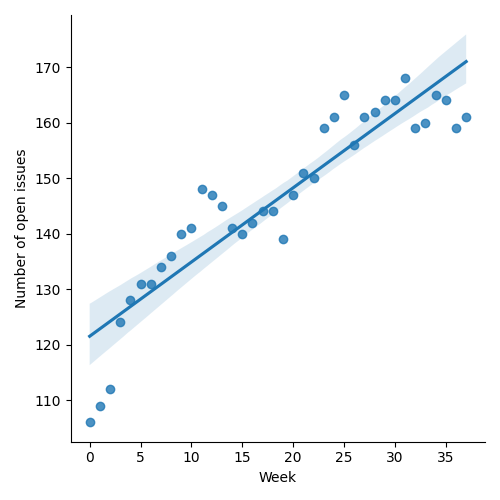
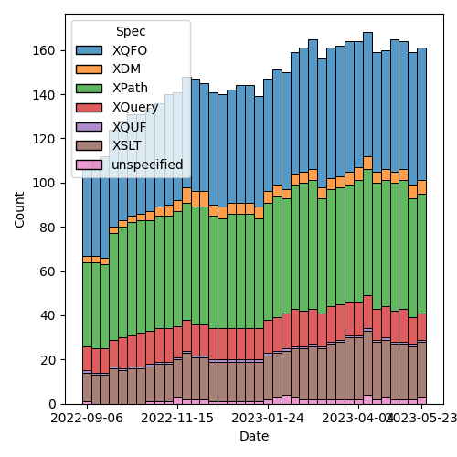
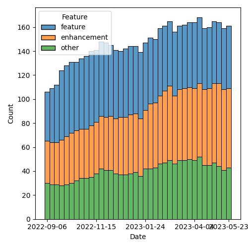

QT4 CG Meeting 036 Minutes 2023-05-30
Table of Contents
Minutes
Approved at meeting 037 on 6 June 2023.
Summary of new and continuing actions [0/9]
[ ]QT4CG-002-10: BTW to coordinate some ideas about improving diversity in the group[ ]QT4CG-016-08: RD to clarify how namespace comparisons are performed.[ ]QT4CG-026-01: MK to write a summary paper that outlines the decisions we need to make on “value sequences”- This is related to PR #368: Issue 129 - Context item generalized to context value and subsequent discussion.
[ ]QT4CG-029-01: RD+DN to draft spec prose for the “divide and conquer” approach outlined in issue #399[ ]QT4CG-029-07: NW to open the next discussion of #397 with a demo from DN See PR #449[ ]QT4CG-035-01: CG to make a few more (slightly more complex)map:keysexamples.[ ]QT4CG-035-02: CG to fix the type signature and examples inmap:filter.[ ]QT4CG-035-03: NW to attempt to draft a PR that allows xs:string to be promoted to xs:anyURI[ ]QT4CG-036-01: NW to draft a PR to resolve issue #414 along the lines MK proposed.[ ]QT4CG-036-02: MK to revise function identity following the discussion in meeting 036.[ ]QT4CG-036-03: MK to revise PR #521 following the discussion in meeting 036.
1. Administrivia
1.1. Roll call [9/12]
Regrets BTW, CG.
[ ]Anthony (Tony) Bufort (AB)[X]Reece Dunn (RD)[X]Sasha Firsov (SF)[ ]Christian Grün (CG)[X]Joel Kalvesmaki (JK) [x:10-][X]Michael Kay (MK)[X]John Lumley (JL)[X]Dimitre Novatchev (DN)[X]Ed Porter (EP) [x:05-][X]C. M. Sperberg-McQueen (MSM)[ ]Bethan Tovey-Walsh (BTW)[X]Norm Tovey-Walsh (NW). Scribe. Chair.
1.2. Accept the agenda
Proposal: Accept the agenda.
Accepted.
1.2.1. Status so far…

Figure 1: “Burn down” chart on open issues

Figure 2: Open issues by specification

Figure 3: Open issues by type
1.3. Approve minutes of the previous meeting
Proposal: Accept the minutes of the previous meeting.
Accepted.
1.4. Next meeting
The next meeting is scheduled for Tuesday, 6 June 2023.
CG gives regrets for 6 June.
1.5. Review of open action items [2/8]
[ ]QT4CG-002-10: BTW to coordinate some ideas about improving diversity in the group[ ]QT4CG-016-08: RD to clarify how namespace comparisons are performed.[ ]QT4CG-026-01: MK to write a summary paper that outlines the decisions we need to make on “value sequences”- This is related to PR #368: Issue 129 - Context item generalized to context value and subsequent discussion.
[ ]QT4CG-029-01: RD+DN to draft spec prose for the “divide and conquer” approach outlined in issue #399[ ]QT4CG-029-07: NW to open the next discussion of #397 with a demo from DN See PR #449[X]QT4CG-034-02: NW to check ExprSingle on PR #447 before merging this PR.[X]QT4CG-034-03: NW to check why the diff for PR #447 is off the wrong base[ ]QT4CG-035-01: CG to make a few more (slightly more complex)map:keysexamples.[ ]QT4CG-035-02: CG to fix the type signature and examples inmap:filter.[ ]QT4CG-035-03: NW to attempt to draft a PR that allows xs:string to be promoted to xs:anyURI
1.6. Review of open pull requests
2. Technical Agenda
2.1. Issue #414: Lift character set restriction of xs:string
- See Issue #414. There was a lot of discussion of this issue last week. MK has followed-up with a comment that proposes a way forword. I propose a ten minute time-boxed discussion to answer the question: shall we direct someone to write a PR along the lines MK suggests?
MK explains his comment.
- RD: My understanding with XQuery is that the source text inherits this functionality, so technically if a processor implements XML 1.0 then you can’t have 1.1 characters.
- MK: We could relax the rules there as well, I’m more concerned with
things like
unparsed-text(), like handling control characters as field delimiters in parse-csv. - DN: What would be effected? I would like to see how be serializing,
etc. Which functions would be effected, for example
codepoints-to-string()? - NW: That will come from the actual proposal…this is just about whether we should do it.
Proposal: draft a PR along these lines.
Accepted.
ACTION QT4CG-036-01: NW to draft a PR to resolve issue #414 along the lines MK proposed.
2.2. PR #525: 520: add function identity and use it in deep-equal
- See PR #525
MK describes the proposal.
- MK: I was trying to define a universal equality that could apply to
keys and sets. Hit obstacles, primarily with the existing map
functions and the fact that they atomize.
- … Let’s start with the data model…
- … Adds text describing how functions have identity and how that identity is used.
- … Most of the other changes are in functions and operators…
- … In the section “properties of functions” we use the identity properties for determinism.
- … In deep-equal, we use function identity
- … The changes to function-lookup are sort of independent; it had got out of date with other things. Tidied that up.
- … Everything that creates a function now has a clause that states how function identity is determined.
- … And then in XQuery…
- … Defines identity for partial function application
- … Describes function identity in 4.4.2.6
- … Adds exceptions for function identity wrt function references and optimization.
- … Let’s start with the data model…
Some discussion of what an optimizer may do. Basically, it’s free to do anything that it can prove won’t change the identity.
- DN: What is the lifetime/scope of function identity? What about permanent functions, the system defined functions? I think we can probably assign permanent identities for them. This would significantly decrease any kind of house keeping.
- MK: That’s essentially what this says.
- DN: Maybe we could be more clear and say that system wide functions have permanent identity which is known, and is persisted across XPath expressions.
- MK: There’s no way to compare functions across two different execution scopes.
- DN: That’s why I’m saying this, string-length could always have the same identity.
- MK: But that’s not a testable assertion. That can’t effect the result of a query.
DN attempts to describe a scenario where it would matter. For example, if `transform()` returns a map that contains function items. If the function item returned, for example, `string-length`, they should be the same.
- MK: It’s implementation-defined if the
transformfunction is executed in the same execution scope. So yes, we should clarify that. - DN: I’m suggesting that system functions should have pre-defined, permanent identity that’s well known and will be equal between different evaluations. We could have a keyword that defines the idnetity of a function.
- RD: My understanding with this functionality is that an implementor gets to decide what the identity is. For example, an implementor could use the function pointer as an identity. So the system functions for that implementation would have the same identity. That would make them the same as a result of evaluating the named function reference.
- MK: Yes. There are many ways you could implement this internally. You could use an address in memory a UID or all sorts of ways.
- MSM: Three points: first, when you were looking at XPath and looking
at some deletions you said all this stuff moved elsewhere; where did it go?
- Some discussion of the consequences; the results are the same.
- … second, you say “it’s helpful to know if two variables refer to the same function”, but I always think of other contexts.
- MK: We have the same problem with nodes; we talk about sequences
“containing nodes” but what they really contain are “references to nodes”.
- … It makes it very difficult to talk about identity.
- MSM: Right, okay.
- … And I can’t remember what my third point was…
- JK: Is function identity exposed publicly? Is it up to the implementor how they define the identity?
- MK: The identity is never exposed as a value; all you can do is ask
if two functions have the same identity. It’s well defined that some
functions are the same. If you bind one variable to the value of
another:
let $x := $y, you now have a guarantee thatdeep-equal($x,$y)will return true.- … I don’t think we should define how identity is constructed.
- JL: Is it the case that
string-length#1would be a candidate for identity, but notstring-length#0. - MK: Yes, if it’s dependent on the context, they’re going to be
different.
- … The optimizer might be smart enough to work out that a collation-dependent function was identical.
- MSM: I’ve remembered, in the text that we’re looking at (4.4.2.6),
the beginning of the second paragraph “an expression that returns a
new function item…” seems to me to be begging the question a little
with the adjective “new”.
- MK: That’s why I added the parenthetical remark!
Some further discussion of how this might be worded.
- MK: Yes, taking the word “new” out might be better.
- DN: This text speaks only about functions that are not context dependent. How do we compare two context-dependent functions?
- MK: They have different identity.
- DN: Does this mean that the context is part of the value of the identity?
- MK: Yes, the saved context (now covered by the data model) is part of a function item.
- DN: It might be useful to put it explicitly here in 4.4.2.6.
- MK: Okay, yes.
- RD: I agree with DN that more notes and examples would be good here.
- JL: I think if we take the case of the standard functions, there
could be cases where the function item is returned in a different
context, but it depends on that function if it is context dependent.
For example,
countis entirely independent of the context. - MK: Yes, some depend on parts of the context, some on parts of the context that’s invariant across the query.
- RD: Those are properties of the function.
- MK: I can elaborate that.
- DN: How do we compare two indeterministic functions? Is having identity enough?
- MK: That’s a good question. If you compare the random number
generator function with itself, it’s not deterministic but it is
identical to itself.
- … Function identity is related to determinism, but it’s not exactly the same thing.
- … The fact that a function isn’t deterministic doesn’t mean it isn’t identical to itself.
- JL: That would cover
map:keysas well? - MK: Yes, that’s part of the discussion fo determinism.
- MK: They key thing is whether or not the functions are distinguishable.
ACTION QT4CG-036-02: MK to revise function identity following the discussion in meeting 036.
Proposal: Accept this PR?
Accepted.
2.3. PR #524: 503: reinstate focus functions
- See PR #524
MK describes the proposal.
- MK: This is a feature we had, but it went sideways when we changed the syntax for lambda functions.
- … The proposal is basically to implement CG’s suggestion of using
function {} - … It’s semantically different so described in its own section, §4.4.2.5
- DN: I would suggest that before we commit to this, everyone reads the whole thread of the issue. I’ll summarize: we are not doing a service to the XPath user. Generally, I think this makes things messy and not maintainable. We should have all this in mind.
Proposal: Accept this PR?
- DN: I object.
- NW: Are you prepared to accept that consensus is against you?
- DN: Yes. But I still think it’s a mistake.
The proposal is accepted.
2.4. PR #521: 518: Add transitive-closure() function
- See PR #521
- MK: I’ve mangled the diffs.
Some grumbling about PRs and diffs and merge conflicts.
- MK: I did have one technical question; should transitive closure
include the starting item or not?
- It’s easier to write the function if it does, but easier to use if you don’t. So it’s 1 or more steps instead of zero or more steps.
- The CS literature seems to favor 1 or more steps.
- MK: I decided to define it only over nodes for the time being
because we only have sets of nodes. If we have sets of other things,
it could be generalized easily enough.
- … I made it start with a set of nodes instead of a single node.
- MK: If your function creates new nodes, you could be in a non-terminating position.
- MSM: I think that the question that you asked about whether to
include the initial item is the difference between reflexive
transitive closure and positive transitive closure. Given a binary
relation R, these will be written as R* or R+.
- … I’m struggling in part because I think of taking the transitive closure as starting from a relation and returning a relation.
- MK: I did consider making this a function that operates over functions, but in a sense what we’ve delivered here is a composite of getting a new function and applying it. I thought that would be more useful.
- MSM: Blind faith in generality leads me to think this might be better has a higher-order-function with some syntactic sugar for applying it.
- MK: That’s a very good point.
- DN: First, did I understand that MK defined transitive closure as something that excludes the starting step? Because we have good examples of transitive closure in XPath that includes the first step: ancstor-or-self, for example.
- MK: Yes.
- DN: So we could have a flag to determine if that should be included or not.
- DN: Second, a question about non-termination. Then from a programmability point of view, it’s possible to have something equivalent to “time out”, perhaps a maximium limit in the number of items in the interation to raise an error or call some other functions. In other cases, we wouldn’t know what it’s runtime behavior would be.
- JL: With this example, it might be worth putting a note in that the evaluation of the function body itself has a context of the evaluation of the transitive closure. That needs to be fairly carefully described.
- MK: The subtlety is the function that uses
//to go back to the root. - JL: Yes, but the @id isn’t part of that.
- MK: Yes, that is subtle.
- MSM: Following up on DN’s suggestion that we allow a parameter to bound the computation, I think the natural parameter here is the number of steps.
- NW: That’s what I would have thought
- RD: 👍
- MK: That’s a feature rather than just a way of stopping termination.
- MSM: If we wanted to go futher, we could allow a range. Give me this relation applied exactly three times or two-to-four times and the default would be (0,1)-*.
- MK: Are we over-engineering?
- MSM: Maybe, but the 0 or 1 is precisely the difference between the two kinds.
- RD: Perhaps adding an ancestor example would help.
ACTION QT4CG-036-03: MK to revise PR #521 following the discussion in meeting 036.
3. Any other business?
None heard.